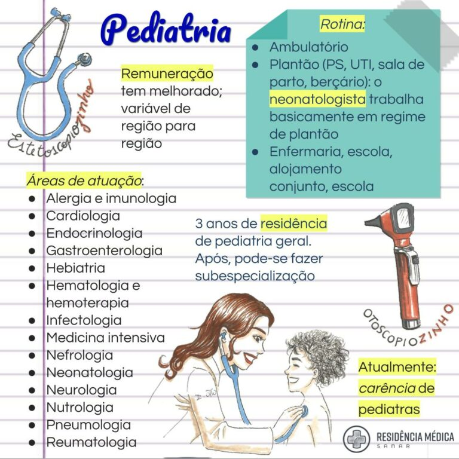

Pediatria é a especialidade da Medicina dedicada ao cuidado da saúde de crianças, pré-adolescentes e adolescentes . Sua atuação inclui a prevenção e tratamento de doenças desde o nascimento até a fase adulta .
Em média, são de de oito a nove anos para se formar em Pediatria
De acordo com o estudo Médica no Brasil,divulgado em 2023, a área de pediatria conta com 48.654 especialistas. É a segunda especialidade com maior número de médicos, atrás apenas de Clínica Médica. Além disso, há sempre uma grande demanda por profissionais dessa especialidade, seja na capital ou no interior. Essa especialidade também é a segunda maior em número de profissionais fazendo residência (4.546). Com relação a demanda por pediatras, o público que esse profissional atende, que vai de bebê ao final da adolescência, são os que mais tem regularidade de consultas. Segundo a Sociedade Brasileira de Pediatria, a quantidade de visitas ao pediatra varia muito com a idade do paciente as suas necessidades individuais. Por exemplo, nos primeiros meses de vida é recomendado uma consulta por mês. Além disso, as estatísticas do Sistema Único de Saúde (SUS) mostram que na faixa etária pediátrica, os brasileiros chegam a realizar dez consultas por criança anualmente. Sendo assim, seriam necessárias 630 milhões de consultas por ano para atender a todos.
De acordo com a Sociedade Brasileira de Pediatria, existem mais de 270 instituições brasileiras que oferecem a residência na área. De acordo com a, existem mais de 270 instituições brasileiras que oferecem a residência na área. Inicialmente, a especialização tinha duração de dois anos. No entanto, a partir de 2019, o programa passou a ser de três anos. Um dos motivos eram as dificuldades enfrentadas pelos residentes que faziam parte de sua formação no exterior.